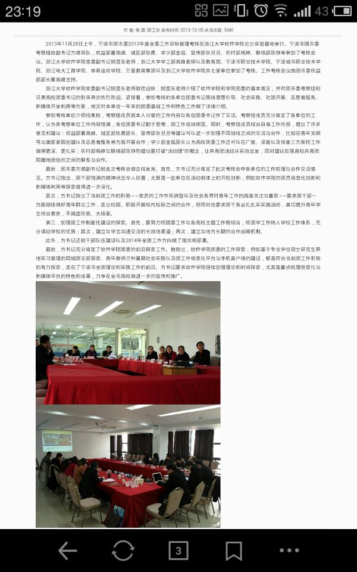
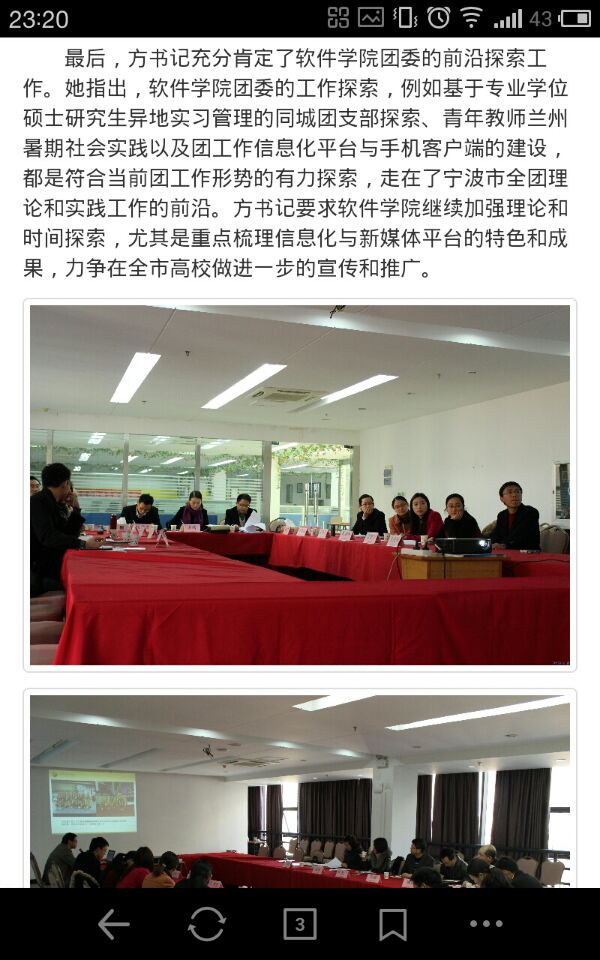

浙江大學XPlan項目新聞爬蟲手機屏幕適配文檔
前言
XPlan 是一個“基於校園強關係的社交應用”的開發代號。其中有一個功能是從學校網站上通過網絡爬蟲（Web Crawler）形式將學校新聞抓取到XPlan自身的數據庫當中。
而這裏出現的一個問題就是學校網站上面的文章是通過類似於 KindEditor、UEditor這類在線富文本編輯器生成的代碼。
這類代碼有幾個共性：
- 代碼有大量冗餘、多重無用嵌套。
- 非常低的代碼可讀性。
- 在PC瀏覽器中表現力不錯，往往能以低效的代碼實現預期排版。
所以這些富文本編輯器可以在PC各大內核瀏覽器中表現良好，但是不便人工修改代碼。
而 XPlan 確是一個由智能手機主導的應用，新聞將會通過一個 WebView 體現出來。所以就需要一定的方法將這些髒亂的代碼適配成手機屏幕下表現力良好的代碼。
預處理
在這裏，我們將新聞的代碼鎖定在新聞內容排版，而排除了其它類似於新聞標題、新聞作者等其它信息。
以我們浙江大學軟件學院爲例，我們爬取的新聞內容代碼將如下：
1 | <div class="vid_wz"> |
所有內容將被包括在這個類型爲 vid_wz 的 div 當中。
這時，我們將其包括在一個自己實現定義好的模板當中。該模板與新聞內容將會形成一個完整的網頁，包括完整的 html、head、body 等標籤。
1 | <!DOCTYPE html> |
這裏需要注意的一點的就是其中的一個 meta 標籤：
1 | <meta name="viewport" content="width=device-width, initial-scale=1.0, maximum-scale=1.0, user-scalable=no" /> |
它的意思是定義 viewport 的一些屬性，實現了初步的手機網頁適配。
Viewport
手機瀏覽器是把頁面放在一個虛擬窗口（即 viewport）中，用戶可以通過平移和縮放來看網頁的不同部分。
通過 viewport 我們能對頁面的一些縮放進行手機適配。
我們所需要做的僅是在 head 中插入一個 meta 標籤，命名爲 viewport，然後定義好其 content。
content 的語法如下：
width
控制 viewport 的寬度，可以指定一個值或者特殊的值，如 device-width 爲設備寬度。
height
與 width 相對應，指定高度
initial-scale
初始縮放，即頁面初始縮放程度。這是一個浮點值，是頁面大小的一個乘數。例如，如果你設置初始縮放爲 1.0，那麼頁面在展現的時候就會以分辨率的1:1來展現。如果你設置爲2.0，那麼這個頁面就會放大爲2倍。
maximum-scale
最大放大倍數。
user-scaleble
用戶調整縮放，即用戶是否能改變頁面縮放程度。如果爲 yes 即爲可以， no 爲不可以。
Cheerio模塊*
由於 XPlan 的後端是基於 node.js 構架的，所以 cheerio 模塊是一個 node.js 專有的模塊。
它的作用是將一段HTML代碼轉換爲一棵DOM元素樹。
在其官網上是這麼詮釋的：爲服務端定製的快速、靈活、輕量級實現的 jQuery 內核。通常熟悉 jQuery 使用的開發者應該會對其使用方法比較熟悉。
所以在我們做接下去適配修改的之前，我們需要將我們剛纔生成的完整HTML代碼 轉換爲一棵我們可以操作的DOM元素樹。
1 | var cheerio = require("cheerio"); |
這時我們便能以熟悉的jQuery模式對其進行操作了，如：
1 | $("p").html("hello foo!"); |
Bootstrap
Bootstrap是Twitter推出的一個開源的用於前端開發的工具包。它有一個非常好的響應式的頁面風格，使其在個尺寸屏幕上表現良好。
爲了能更好適應屏幕，我們決定採用其自帶的柵格系統，於是剛纔的頁面模板就有了新的變化：
1 | <!DOCTYPE html> |
首先最外框的 container，用其包裹的元素將實現居中對齊。在不同的媒體查詢閾值範圍內都爲 container 設置了 width，用以匹配柵格系統。
row 是一行柵格系統的外包元素。一行可以有12個柵格。
以 .col-md- 開頭的柵格的最大 container 寬度爲970，最大列寬爲78，並能自適應屏幕。
細節處理
在完成了以上操作以後，我們將對各元素進行微調處理。
好在在手機瀏覽器或者 WebView 中，對各種字體的設置不是非常敏感，所以我們仍然可以不處理一些關於字體變更的設置，以減輕開髮量。
這裏距幾個微調的例子。
<img />
在新聞當中，圖片充當的基本上是新聞照片的角色，在手機當中以單行出現爲佳。
而 Bootstrap 當中本身就有元素類型來讓圖片元素響應屏幕寬度，並可以加上圓角邊框。
所以我們需要做的就是爲所有圖片加上響應的類型：
1 | $("img").addClass("img-thumbnail"); |
注意： 最後的一個移除
img元素自帶的style屬性是因爲在文章發佈的時候，有可能會被富文本編輯器自動加上一些寬高、邊框等信息。爲了統一所有圖片風格以及讓響應式生效，需要將其style屬性全部移除。
下面是是適配前與適配後的對比：


<table></table>
對於 table 元素也需要對它進行自適配，不然很有可能會溢出屏幕，使其多出了一個橫向的滾動條。
1 | $("table").removeAttr("style"); |
上面兩句是移除 table 的原有的一些風格信息以及屬性。後面是爲其加上 Bootstrap 特有的 table 類型。
當然，更多的 table 元素還需要其它更多操作。不過就目前爲止，XPlan 還沒有着手關於 table 的更深一層容錯處理。不過這裏可以提供一個思路。
比如說 這篇文章中，不知道是誰給的在線富文本編輯器勇氣，使其下面幾張圖片都各自被一個 table 及其子元素所包含。更有甚者，有一篇文章的一個段落被一個 table 所包容，並且在其左側還有一個看不見的 td 元素。
我們可以提供的思路就是如果一個 table 只有一行一列就直接將其內容取出並刪除該 table 。
<a />
超鏈接元素是一個新聞與用戶互動的比較重要的元素之一。我們需要保持其美觀性。
舉幾個例子來說，我們可以將超鏈接以一個類按鈕的形式出現：
1 | $("a").removeAttr("style"); |
然後我們甚至可以對其做一些細微的詞彙修改。
比如當新聞發佈者上傳了一個附件然後不負責任地直接將文件名貼上的時候，我們可以貼心地將其顯示文字改爲“下載附件”。
再比如發佈者直接以URL形式顯示一個超鏈接的時候，我們可以貼心地將其改變爲“打開鏈接”等等。
1 | $("a").each(function(idx, elem) { |
然後我們再處理幾個由於誤操作而增加的錯誤鏈接，如在經上面操作後，還存在着url與顯示內容相關的超鏈接可以直接取消，如這類：
1 | 讓我們蕩<a href="起雙槳">起雙槳</a> |
結束語
至此，當下版本的 XPlan 的新聞爬蟲手機屏幕適配基本完成。其中當然還存在着一些細節處理和顯示錯誤處理的不足，但是已經定下了基本的適配思路。
我們還在探索更好的適配方法，而當下的適配形式暫時已經可以滿足了我們項目的需求。